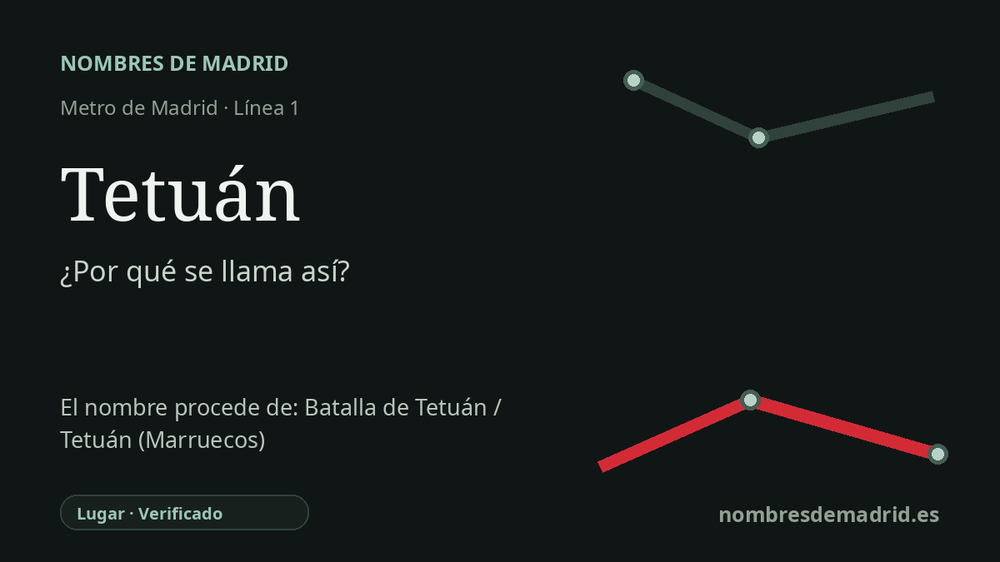

Publicado el · Investigación de Nombres de Madrid · Cómo verificamos cada origen · 7 fuentes consultadas
Respuesta rápida
La estación de Tetuán lleva el nombre del distrito madrileño, cuyo nombre antiguo, Tetuán de las Victorias, recordaba la victoria y toma española de Tetuán, Marruecos, en 1860. El barrio creció en torno a la dehesa de Amaniel y la carretera de Francia tras el breve campamento del ejército regresado y la llegada de comerciantes y pobladores.
La historia del nombre
La estación de Tetuán lleva el nombre del distrito madrileño que la rodea. Cuando la línea 1 se prolongó hacia el norte desde Cuatro Caminos el 6 de marzo de 1929, la nueva estación se situó en Bravo Murillo, a la altura de Marqués de Viana, y pasó a ser cabecera norte de la línea. La documentación histórica de Metro de Madrid identifica la prolongación como el tramo Cuatro Caminos-Tetuán y vincula la estación con el antiguo pueblo o barrio de Tetuán de las Victorias.
El nombre del barrio remite a la Guerra de África de 1859-1860. Las tropas españolas mandadas por el general Leopoldo O'Donnell combatieron en Tetuán, en el norte de Marruecos, y tomaron la ciudad en febrero de 1860. En Madrid, el topónimo Tetuán de las Victorias se aplicó a terrenos de la dehesa de Amaniel en memoria de aquella victoria y de la ciudad marroquí de la que regresaba la campaña.
La versión popular afirma que los soldados regresados acamparon allí y que el barrio nació de ese campamento. La documentación municipal del itinerario histórico confirma el episodio militar, pero lo precisa: las tropas acamparon en la dehesa de Amaniel durante dos días de mayo de 1860 antes de la entrada triunfal prevista, y acudieron multitudes, incluida la reina Isabel II, a ver al ejército. El asentamiento estable parece deberse no solo a soldados que permanecieran allí, sino a comerciantes, visitantes, trabajadores e inmigrantes que levantaron primero instalaciones provisionales y después construcciones definitivas junto al camino.
Ese camino era la antigua carretera de Francia, principal salida septentrional de Madrid, identificada después con la calle de Bravo Murillo. Las primeras calles del entorno recibieron nombres relacionados con la campaña africana, como O'Donnell, Prim, Topete, Ceuta o Wad-Ras; varias cambiaron más tarde. Por eso Tetuán es un nombre de transporte con varias capas: cabecera de Metro, suburbio obrero extramuros, memoria militar decimonónica y, en último término, una ciudad marroquí cuya forma antigua aparece en la UNESCO como Titawin.
La etimología profunda del Tetuán marroquí debe separarse del origen directo de la estación madrileña. La UNESCO registra la medina como antiguamente conocida como Titawin, y las fuentes de referencia suelen relacionar esa forma amazigh/bereber con 'ojos' o 'manantiales'. Para la estación madrileña, sin embargo, el origen firmemente documentado es local e histórico: se llama así por el distrito/barrio de Madrid, que tomó el nombre de Tetuán, Marruecos, a través de la conmemoración española de la victoria de 1860.